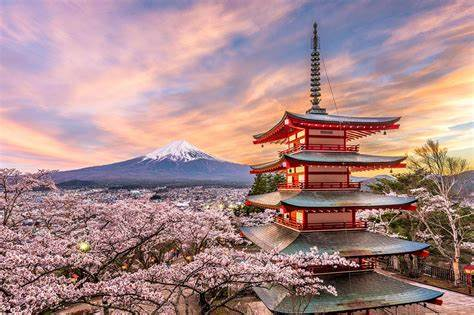
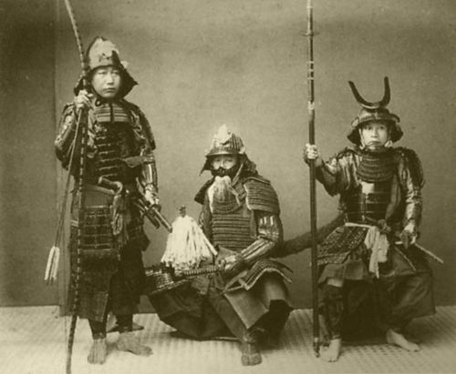

Magia do Japão

O Japão é um país que encanta com sua rica cultura, paisagens deslumbrantes e uma harmonia
única entre tradição e modernidade. Desde os
serenos templos budistas e santuários xintoístas, que nos transportam a tempos antigos, até as vibrantes
cidades como Tóquio, onde arranha-céus futuristas
se misturam a lojas de artesanato tradicional, há sempre algo novo para descobrir. A culinária japonesa,
com seus sabores delicados e apresentação artística,
é uma experiência à parte, assim como as estações do ano, que trazem a beleza das flores de cerejeira na
primavera e a tranquilidade da neve no inverno. Os costumes,
a hospitalidade do povo japonês
e a atenção aos detalhes tornam cada visita uma experiência inesquecível. O Japão é, sem dúvida, um
lugar onde cada esquina revela um novo encanto.
Tóquio: A Mágica da Capital Japonesa

Tóquio é uma cidade fascinante que combina tradição e modernidade de maneira única. Uma das
maravilhas de Tóquio é a sua arquitetura impressionante,
que vai desde templos antigos, como o Senso-ji em Asakusa, até arranha-céus futuristas, como a Tokyo
Skytree, que oferece vistas deslumbrantes da cidade.
Tóquio é uma cidade que nunca dorme, cheia de vida e energia, sempre pronta para surpreender seus
visitantes com novas descobertas.
É um lugar onde cada esquina pode revelar uma nova maravilha!
A Arte do Bushido: Legado dos Samurais

A Arte do Bushido: Legado dos Samurais é um tema fascinante que explora os princípios e
valores que guiavam os samurais no Japão feudal. O Bushido, que significa "o caminho do guerreiro", é um
código de ética que enfatiza a honra, a lealdade, a coragem e a disciplina. Os samurais eram não
apenas guerreiros habilidosos, mas também cultivavam um profundo senso de responsabilidade e respeito,
tanto por seus senhores quanto por suas comunidades.
Esse legado se reflete em várias artes, como a caligrafia, a cerimônia do chá e as artes marciais, que
incorporam a filosofia do Bushido. Através do tempo, esses valores influenciaram não apenas a cultura
japonesa, mas também a forma como o mundo vê a ética e a moralidade dos guerreiros. O Bushido continua a
ser uma fonte de inspiração, simbolizando a busca pela excelência e a importância da integridade
pessoal. Se você tiver mais perguntas ou quiser saber mais sobre um aspecto específico, estou aqui para
ajudar! Conheça os 4 lendários samurais!
- Miyamoto Musashi - Um dos mais famosos samurais, conhecido por sua habilidade em duelos e por ser
o autor do livro "O Livro dos Cinco Anéis", que aborda estratégias de combate e filosofia.
- Oda Nobunaga - Embora mais conhecido como um líder militar e unificador do Japão, Nobunaga também
era um samurai notável que desempenhou um papel crucial na transição do Japão feudal.
-
Toyotomi Hideyoshi - Um dos unificadores do Japão, Hideyoshi começou como um samurai humilde e se
tornou um dos homens mais poderosos do país, conhecido por suas táticas militares e reformas
sociais.
-
Minamoto no Yoshitsune - Um samurai do período Heian, famoso por suas táticas brilhantes e por sua
luta contra os Taira na Guerra Genpei, se tornando uma figura lendária na cultura japonesa.